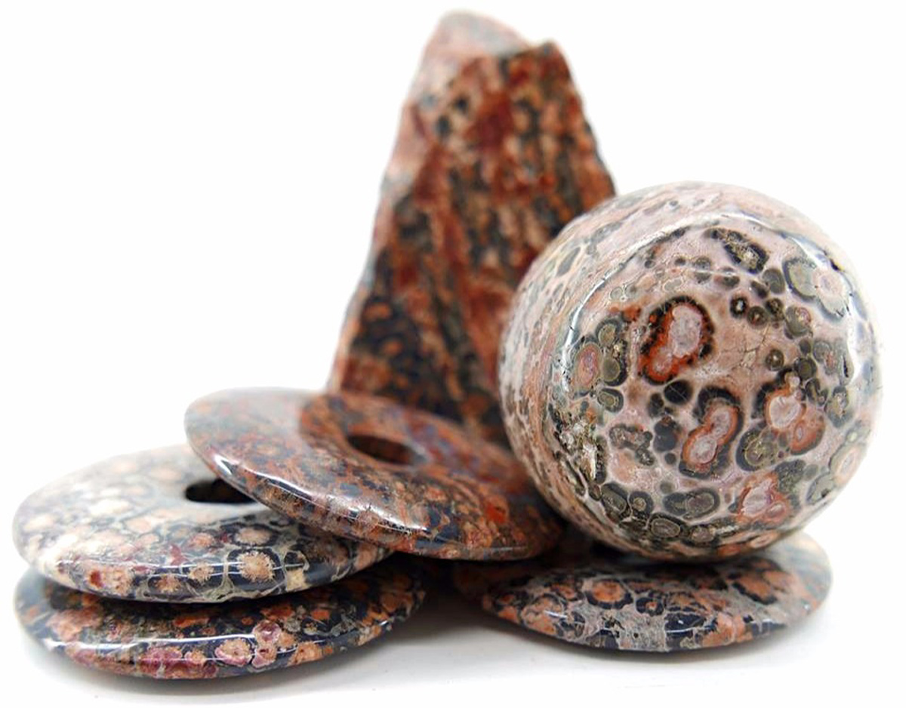
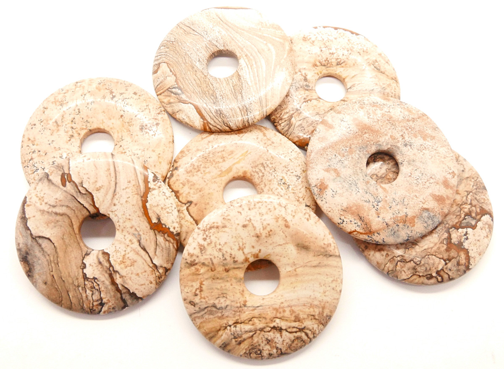

JASPE: poderes y usos
El jaspe es una variedad opaca de cuarzo microcristalino (calcedonia). Puede presentar diferentes colores en función de sus inclusiones, pudiendo contener hasta un 20% de otros minerales. A veces se forma junto con el ágata, el ópalo o algún material fosilizado.
El nombre de jaspe proviene del griego "iaspis", que significa "piedra manchada". En la edad media se le consideraba la piedra de los vencedores, por lo que muchos guerreros mandaban incrustar esta roca en sus espadas. Esto mismo queda patente en la mitología escandinava, que cuenta como Balmung, la espada de Sigifrido llevaba en la empuñadura, se suponia que el mineral le deba el coraje de enfretarse a terribles criaturas. También es conocido que los indios americanos utilizaban el Jaspe en ceremonias para atraer la lluvia y para la adivinación.

Poderes del Jaspe
Entre las propiedades del jaspe destaca su capacidad por calmar a los seres durante los momentos de tensión, y hacer que se unifique todo lo que sucede a su alrededor para estabilizar su alma y mente. De este modo es probable que se genere el sentimiento de ayudar a otras personas. El uso del jaspe va a hacer que tus chakras y aura se alineen y puedas trabajarlos.
El jaspe va a fomentar el correcto funcionamiento tanto de tus órganos circulatorios, como los digestivos y los sexuales. Aplicarse esta piedra energética equilibrará los minerales de tu cuerpo. Esto se traduce en la consecución de un elixir de gema que hace que tu cuerpo no se sobreestimule.
son piedras indicadas para energizar el cuerpo y aportarle fuerza y vitalidad. También se asocian a la limpieza, a la protección y al enraizamiento. Suelen ser indicados para desarrollar y llevar a término ideas y proyectos.
A nivel mental el jaspe agiliza los procesos de pensamiento, las capacidades organizativas y la resolución de proyectos. Del mismo modo estimula la imaginación y lleva a cabo sus ideas. En el aspecto psicológico el jaspe aporta honestidad y coraje para afrontar los problemas. En cuanto al nivel físico, el jaspe hace que el placer sexual sea más intenso y duradero. También hace que el cuerpo se sienta más energético. En función del color de la piedra, las propiedades específicas del jaspe variarán hacia cierto tipo de aplicación.
Poderes según su color:
- El jaspe rojo es una piedra asociada al 1º chakra, promueve el arraigo, la fuerza y la seguridad. Suele ser indicada para energizar el cuerpo y aportarle vitalidad. Se considera una piedra de limpieza y equilibrio. A nivel curativo se dice que ayuda a desintoxicar el sistema circulatorio.
- El jaspe verde se asocia al chakra del corazón. Representa el equilibrio y la curación.
- El jaspe iraí posee un efecto sedante que a la larga favorece el equilibrio interno y la relajación. Como resultado, se asocia con la superación del miedo, sin olvidar la recuperación del ánimo.
- El jaspe dálmata representa el equilibrio entre dualidades, entre el yin y el yan, entre la luz y la oscuridad, entre el cielo y la tierra.
- El jaspe leopardo representa la medicina chamánica y la conexión con la sabiduría interna. 
- El jaspe mokaíta representa el equilibrio y la flexibilidad. Físicamente se dice que ayuda a reforzar el sistema inmunitario y a purificar la sangre.
- El jaspe océano es una piedra multicolor que conecta con la alegría y favorece la expansión y la relajación. Ayuda a disolver la tristeza y los estados de ánimo negativos. Es una piedra asociada al chakra del corazón, con una acción suave y amorosa, armonizando y energizando también el 1º chakra y el plexo solar. Está especialmente indicada para los niños.
- El jaspe orbicular representa la armonía y la fluidez.
- El jaspe paisina representa la madre tierra y se asocia a la serenidad y a la confianza. 
- El jaspe picasso crea conexión con el mundo espiritual. De este modo, se trata de establecer un equilibrio entre la energía del yin y el yang. Tiene incidencia en el chakra de la garganta, lo que abarca oídos, boca, cuello y hombros.
- El jaspe policromo representa la integridad y la fuerza personal.
- El jaspe sanguíneo se considera una piedra de sanación indicada para energizar el cuerpo y aportarle vitalidad. También se asocia a la limpieza, la protección y al enraizamiento. Infunde calma y coraje. A nivel curativo se dice que ayuda a purificar la sangre y a reforzar el sistema inmunitario.

Usos del jaspe
- Puedes ponerlo en la almohada o ponerlo en contacto con la piel para activar este tipo de piedra energética para alinear tus chakras y limpiar tu aura.
- El jaspe no tiene una posición específica para que actúe como elemento curativo, sino que deberás colocarla en la parte del cuerpo que consideres necesario. Siempre y cuando tenga un contacto directo con tu piel. A la hora de usar el jaspe tienes que dejarlo durante periodos largos de tiempo sobre tu piel, ya que su actuación pasa por un lento proceso. Si colocas una piedra de jaspe grande frente a la puerta de tu habitación, favorecerás la eliminación de la energía negativa. Para conseguir este beneficio el jaspe ha de ser marrón.
- A la hora de meditar, el jaspe alinea los chacras y puede usarse en el trabajo con ellos. Cada color es apropiado para un chacra específico. Proporciona protección, absorbe la energía negativa y limpia y alinea los chacras y el aura, además de equilibrar el ying y el yang.
-
Puedes decorar tu casa con algún objeto de jaspe, éste mantendrá alejadas las energías negativas y
protegerá tu hogar.
A menudo lo podemos encontrar asemejando las flores de un árbol de gemas que se suele colocar en la casa o en la oficina con el objetivo de aportar paz y prosperidad bajo sus energías positivas.
Cómo limpiar el citrino
Debido que se trata de un mineral que absorbe y aleja las energías negativas, es importante que sea despojada y limpiada cada cierto tiempo, para que pueda seguir cumpliendo con su finalidad adecuadamente. Para ello hay que seguir los siguientes pasos:
- Coloca la piedra jaspe en un envase de vidrio.
- Tapa la piedra con agua destilada o de manantial.
- Vierte un poco de sal y dejala actuar toda la noche bajo la luz de la LUNA LLENA.
- Luego sácala y sécala con un paño suave.
- Puede realizar estos rituales de limpieza y recarga cada una o dos meses, ya que es una de las piedras con poca o ninguna necesidad de limpieza y recarga porque absorbe y elimina la energía negativa.
Resumen
- Eleva la energía del cuerpo.
- Aporta al cuerpo y a la mente fortaleza y vitalidad.
- Atraen el éxito y la abundancia.
- Limpian el cuerpo y el alma.
- Refuerza el sistema inmunitario.
- Limpa la sangre.
- Estimula la creatividad.
- Transforma las ideas en acción.
- Aumenta el placer sexual.
- Transmuta y elimina la energía negativa.
- Elimina los miedos.
- Estabiliza el alma y la mente.
- Puedes llevarla suelta, como joya (colgante, anillo, pulsera...) o puedes dejarla en un ambiente.
- Se limpia con agua y sal, dejándola debajo de la luz de la luna llena toda la noche.